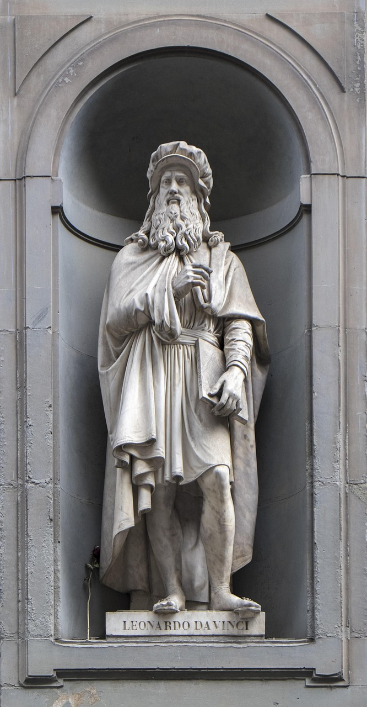

Jeunesse de Léonard de Vinci
Léonard de Vinci est né le 15 avril 1452 à Vinci, en Toscane, Italie. Fils illégitime d'un notaire et d'une paysanne, il a été élevé par sa mère dans un petit village toscan. Très jeune, il montre un intérêt profond pour les arts et les sciences.
Il a été formé à Florence, où il a étudié sous la direction de l'artiste Andrea del Verrocchio. C'est là qu'il a perfectionné son talent en peinture et en sculpture, mais aussi dans les domaines de l'ingénierie et des sciences naturelles.
La Carrière de Léonard de Vinci
En 1482, Léonard quitte Florence et se rend à Milan, où il travaille pour le duc Ludovico Sforza. Il devient rapidement une figure clé dans la cour de Milan, non seulement comme peintre, mais aussi comme ingénieur et inventeur. Son rôle à la cour de Milan est multiple : il crée des œuvres d'art, conçoit des machines et intervient dans des projets d'urbanisme.
En plus de ses réalisations artistiques, Léonard a conçu des inventions dans des domaines aussi variés que l'aviation, la mécanique et l'architecture. Beaucoup de ses carnets de croquis, remplis de dessins et de notes, témoignent de son génie multidimensionnel.
Les Œuvres de Léonard de Vinci
Parmi ses œuvres les plus célèbres, on trouve "La Joconde", peinte entre 1503 et 1506, aujourd'hui exposée au musée du Louvre à Paris. Ce portrait est un chef-d'œuvre de la Renaissance, célèbre pour son sourire énigmatique et son réalisme étonnant.
Il est également l'auteur de "La Cène", une fresque monumentale réalisée à Milan pour le réfectoire du monastère de Santa Maria delle Grazie. Cette œuvre représente le dernier repas de Jésus-Christ avec ses disciples avant sa crucifixion.

L'Héritage de Léonard de Vinci
Léonard de Vinci est aujourd'hui considéré comme l'un des plus grands génies de l'histoire. Ses contributions à l'art, la science et l'ingénierie continuent d'influencer des générations d'artistes et de chercheurs.
Malgré sa mort en 1519, à l'âge de 67 ans, Léonard laisse derrière lui un héritage durable. Ses carnets de croquis, ses inventions et ses œuvres restent des références inégalées dans le monde entier.